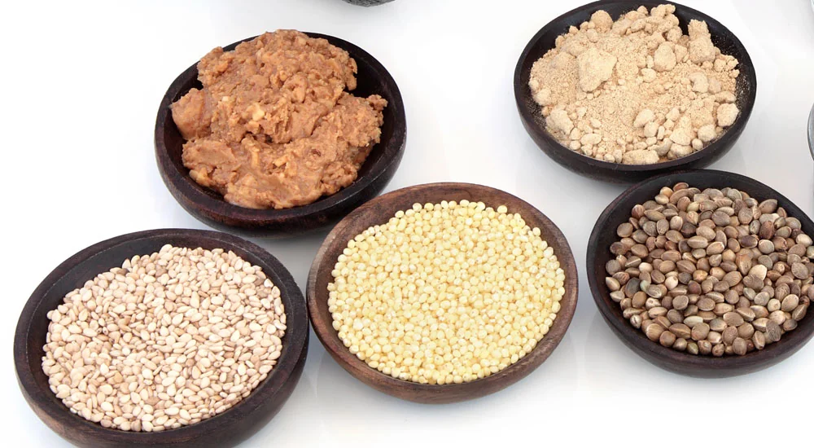

Alles über Aminosäuren: Grundlagen, Funktionen & Ernährung

Aminosäuren sind die essenziellen Bausteine von Proteinen, also von Eiweißen, und spielen eine entscheidende Rolle für zahlreiche Körperfunktionen, einschließlich Muskelaufbau, Gewebeaufbau und Immunsystem.
Wusstest du das, dass Aminosäuren die Schlüsselbausteine deines Körpers sind, die nicht nur für den Muskelaufbau, sondern auch für viele lebenswichtige Funktionen verantwortlich sind?
In diesem Artikel erfährst du alles über die verschiedenen Arten von Aminosäuren, ihre Funktionen im Körper sowie wertvolle Tipps für die Ernährung zur optimalen Aufnahme.
Eine ausgewogene Ernährung mit proteinreichen Lebensmitteln wie Fleisch, Fisch, Eiern und Hülsenfrüchten ist entscheidend, um alle notwendigen Aminosäuren wie z. B. Leucin, Lysin und Arginin aufzunehmen. Dabei ist es wichtig, die richtigen Nahrungsquellen auszuwählen und darauf zu achten, in welcher Form du sie zu dir nimmst.
Neben vollständigen Proteinen in der Nahrung, die alle essenziellen Aminosäuren enthalten, gibt es auch spezielle Nahrungsergänzungsmittel, die gezielt auf bestimmte Bedürfnisse abgestimmt sind. Ich als unabhängiger FitLine Berater nutze beispielsweise seit über 20 Jahren essentielle Aminosäuren auch als Nahrungsergänzung. Besonders, weil ich vegetarisch lebe und viel Sport und Muskelaufbau¹ betreibe, ist dies für mich sehr sinnvoll.
Achte darauf, dass deine Mahlzeiten eine Vielzahl von Aminosäuren bieten, sodass dein Körper optimal mit diesen wichtigen Bausteinen versorgt wird. Es kann auch hilfreich sein, den eigenen Proteinbedarf individuell zu berechnen, um sicherzustellen, dass du genügend Aminosäuren für deine persönlichen Ziele erhältst.
Sportler können unter anderem von verzweigtkettigen Aminosäuren (BCAAs) profitieren, um z. B. ihren Muskelaufbau zu unterstützen und Muskelabbau zu verhindern. Auch spielt der Zeitpunkt der Zufuhr eine entscheidende Rolle: Das Konsumieren von proteinreichen Snacks oder Shakes nach dem Training kann den Körper unterstützen.
Doch nun einmal ganz von vorne. Was sind eigentlich Aminosäuren, und warum sind sie so wichtig?
Was sind Aminosäuren?
Aminosäuren sind die Bausteine von Proteinen, also von Eiweiß jeglicher Art, und spielen eine entscheidende Rolle in vielen biologischen Prozessen. Sie sind organische Verbindungen, die überall in der Natur vorkommen und für den menschlichen Körper unverzichtbar sind. Aminosäuren sind nicht nur für den Muskelaufbau wichtig, sondern z. B. auch für die Synthese von Hormonen, Enzymen und Neurotransmittern. Sie tragen zur Regulierung zahlreicher Körperfunktionen bei und sind entscheidend für das Wachstum, die Reparatur und die Erhaltung von Geweben. In der Nahrung sind sie in größeren Mengen in proteinreichen Lebensmitteln wie Fleisch, Fisch, Eiern und Hülsenfrüchten enthalten.
Da der Körper einige dieser Aminosäuren selbst herstellen kann, ist es wichtig zu verstehen, welche Aminosäuren wir über die Nahrung aufnehmen müssen.
Die Grundlagen der Aminosäuren
Aminosäuren setzen sich aus einer Aminogruppe (-NH2), einer Carboxylgruppe (-COOH), einem Wasserstoffatom und einer variablen Seitenkette (R-Gruppe) zusammen. Diese Struktur ermöglicht es den Aminosäuren, miteinander zu interagieren und komplexe Proteinstrukturen zu bilden.
Die R-Gruppe bestimmt die spezifischen Eigenschaften jeder Aminosäure, einschließlich ihrer Polarität, Größe und chemischen Reaktivität. Insgesamt gibt es 20 verschiedene Aminosäuren, die in der menschlichen Ernährung eine Rolle spielen. Während einige davon vom Körper synthetisiert werden können, müssen andere über die Nahrung aufgenommen werden.
Die verschiedenen Arten von Aminosäuren
Es gibt insgesamt 20 verschiedene Aminosäuren, die in zwei Hauptkategorien unterteilt werden können: essentielle und nicht-essentielle Aminosäuren.
Essentielle Aminosäuren sind diejenigen, die der Körper nicht selbst herstellen kann und daher über die Nahrung zugeführt werden müssen. Dazu gehören unter anderem Leucin, Lysin und Methionin.
Nicht-essentielle Aminosäuren hingegen können vom Körper synthetisiert werden und umfassen beispielsweise Glycin, Tyrosin und Prolin. Nicht-essenzielle Aminosäuren werden vom Körper unter Verwendung der essentiellen Aminosäuren gebildet.
Es ist wichtig, eine ausgewogene Zufuhr beider Kategorien sicherzustellen, um den Körper optimal zu ernähren, jedoch sind die essentiellen Aminosäuren von unschätzbarer Bedeutung und Wichtigkeit. Sie sind lebensnotwendig für uns und bilden quasi die Grundlage jeder deiner Körperzellen und Strukturen!
Was sind die 9 essentiellen Aminosäuren?
Die neun essentiellen Aminosäuren sind: Histidin, Isoleucin, Leucin, Lysin, Methionin, Phenylalanin, Threonin, Tryptophan und Valin. Diese Aminosäuren müssen über die Nahrung aufgenommen werden, da der Körper sie nicht selbst herstellen kann.
Sie werden im Körper nicht lange gespeichert, jedoch permanent benötigt. Daher ist es wichtig, dass du für eine kontinuierliche Aufnahme dieser Eiweißbausteine sorgst.
Das sind die 20 wichtigen Aminosäuren für den Menschen:
Die 20 Aminosäuren, die für den menschlichen Körper bedeutsam sind, heißen: Alanin, Arginin, Asparagin, Asparaginsäure, Cystein, Glutamin, Glutaminsäure, Glycin, Histidin, Isoleucin, Leucin, Lysin, Methionin, Phenylalanin, Prolin, Serin, Threonin, Tryptophan, Tyrosin und Valin.
Welche Aminosäuren haben einen Einbuchstabencode?
Die Aminosäuren haben folgende Einbuchstabencodes:
- Alanin (A)
- Arginin (R)
- Asparagin (N)
- Asparaginsäure (D)
- Cystein (C)
- Glutamin (Q)
- Glutaminsäure (E)
- Glycin (G)
- Histidin (H)
- Isoleucin (I)
- Leucin (L)
- Lysin (K)
- Methionin (M)
- Phenylalanin (F)
- Prolin (P)
- Serin (S)
- Threonin (T)
- Tryptophan (W)
- Tyrosin (Y)
- Valin (V)
Die chemische Struktur von Aminosäuren
Jede Aminosäure besteht aus einem zentralen Kohlenstoffatom, das vier verschiedene Gruppen bindet: eine Aminogruppe, eine Carboxylgruppe, ein Wasserstoffatom und eine variable R-Gruppe.
Diese Struktur ist entscheidend für die Funktion der Aminosäuren im Körper. Die R-Gruppe variiert zwischen den verschiedenen Aminosäuren und beeinflusst deren chemische Eigenschaften sowie ihre Rolle im Stoffwechsel.
Zum Beispiel ist L-Arginin für die Produktion von Stickstoffmonoxid wichtig, während Tryptophan als Vorläufer des Neurotransmitters Serotonin dient. Das Verständnis dieser chemischen Strukturen hilft dabei, die vielfältigen Funktionen der Aminosäuren im menschlichen Körper besser zu erfassen.
Die Bedeutung von Aminosäuren erstreckt sich weit über ihre Rolle als Bausteine von Proteinen hinaus; sie sind auch entscheidend für zahlreiche physiologische Prozesse.
Die Funktionen von Aminosäuren im Körper
Aminosäuren erfüllen eine Vielzahl wichtiger Funktionen im menschlichen Körper. Sie sind nicht nur die Bausteine von Proteinen, sondern auch an zahlreichen biochemischen Prozessen beteiligt, die für das reibungslose Funktionieren unseres Organismus entscheidend sind. In diesem Abschnitt werden wir die verschiedenen Rollen beleuchten, die Aminosäuren spielen, und wie sie zur Erhaltung unseres Körpers beitragen.
Der Aufbau von Gewebe
Aminosäuren sind essenziell für den Aufbau und die Reparatur von Geweben. Proteine, die aus Aminosäuren zusammengesetzt sind, bilden die Struktur z. B. von Muskeln, Haut, Bindegewebe, Haaren und Nägeln. Aber auch deine Knochen und Zähne bestehen unter anderem aus Aminosäuren. Es gibt nichts im Körper, wo du sie nicht findest.
Ein wesentlicher Aspekt der Bedeutung von Aminosäuren liegt in ihrer Rolle bei der Muskelregeneration und dem Muskelaufbau. Besonders nach körperlicher Anstrengung sind Aminosäuren unerlässlich, um beschädigtes Gewebe zu reparieren und neue Muskelfasern zu bilden. Leucin beispielsweise fördert die Muskelproteinsynthese und unterstützt somit den Muskelaufbau. In Kombination mit anderen Aminosäuren wie Lysin und Methionin tragen sie dazu bei, die Muskelmasse zu erhalten und zu erhöhen. Dies ist nicht nur für Sportler von Bedeutung, sondern auch für alle, die ihre Muskelmasse erhalten oder erhöhen möchten. Eine ausreichende Zufuhr von Aminosäuren fördert somit nicht nur die sportliche Leistung, sondern auch die allgemeine körperliche Fitness.
Produktion von Hormonen, Neurotransmittern und Immunzellen
Aminosäuren sind auch Vorläufer für viele Hormone und Neurotransmitter, die wichtige Signale im Körper übertragen. Tryptophan zum Beispiel ist bekannt als Vorläufer des Neurotransmitters Serotonin. Tyrosin hingegen wird zur Synthese von Dopamin verwendet, einem weiteren wichtigen Neurotransmitter. Aminosäuren sind auch an der Produktion von Antikörpern beteiligt, die unser Immunsystem ausmachen. Durch ihre Beteiligung an diesen Prozessen zeigen Aminosäuren ihre Vielseitigkeit und Bedeutung für sämtliche Körperfunktionen.
Energiequelle
Zusätzlich zu ihren strukturellen und regulatorischen Funktionen können Aminosäuren auch als Energiequelle dienen. In Zeiten intensiver körperlicher Aktivität oder bei unzureichender Kohlenhydratzufuhr kann der Körper auf Aminosäuren zurückgreifen, um Energie daraus zu gewinnen. Glycin und Alanin sind Beispiele für Aminosäuren, die in diesen Prozessen eine Rolle spielen können. Diese Fähigkeit zur Energiegewinnung macht Aminosäuren zu einem wichtigen Bestandteil der Ernährung, insbesondere für aktive Menschen oder Sportler.
Ein Teil des aufgenommenen Nahrungsproteins wird auch grundsätzlich zu Energie verbrannt, dies ist der sogenannte katabole Stoffwechsel. Wie viel Prozent des Nahrungseiweißes zu Energie verbrannt wird, hängt von der sogenannten biologischen Wertigkeit (oder NNU-Wert) des entsprechenden Eiweißes ab.
Regulation des Stoffwechsels
Aminosäuren beeinflussen auch den Stoffwechsel direkt. Sie sind an verschiedenen enzymatischen Reaktionen beteiligt, die für den Abbau von Nährstoffen erforderlich sind. Methionin zum Beispiel spielt eine Schlüsselrolle im Methylierungsprozess, der für viele biochemische Reaktionen im Körper notwendig ist.
Die Funktionen von unterschiedlichen Aminosäuren sind also vielfältig und reichen weit über den Muskelaufbau hinaus. Sie sind unverzichtbar für zahlreiche physiologische Prozesse und lebensnotwendig für deinen Körper.
Aminosäuren optimal über die Ernährung aufnehmen
Die richtige Nahrung ist der Schlüssel zur ausreichenden Zufuhr von Aminosäuren. In einer ausgewogenen Ernährung spielen diese kleinen Moleküle eine entscheidende Rolle, und häufig ist die Nahrung in dieser Hinsicht nicht optimal. Um die Vorteile von Aminosäuren optimal zu nutzen, ist es wichtig, zu wissen, welche Nahrungsmittel reich an diesen essenziellen Bausteinen sind und wie du sie in deinen Speiseplan integrieren kannst.
Fleisch, Fisch, Eier und Milchprodukte sind hervorragende Quellen für vollständige Proteine, die alle notwendigen Aminosäuren enthalten.
Herausforderungen für Veganer
Vegetarier und Veganer hingegen sollten besonders auf eine Kombination aus verschiedenen Proteinquellen achten, denn speziell bei Veganern ergeben sich Schwierigkeiten, optimale Mengen an essenziellen Aminosäuren aufzunehmen!
Denn: Pflanzliche Proteinquellen haben eine niedrigere biologische Wertigkeit und bieten somit häufig nicht das vollständige Aminosäureprofil, wie es tierische Produkte liefern; bzw. in ungünstigen Mengenverhältnissen, sodass der Körper von bestimmten, essentiellen Aminosäuren zu wenig, oder gar keine erhält.
Veganer benötigen also eine sorgfältige Planung ihres Essens, um sicherzustellen, dass sie eine Vielzahl von Lebensmitteln konsumieren, die die benötigten Aminosäuren enthalten. Eine unzureichende Aufnahme von bestimmten Nahrungsmitteln oder das Fehlen von ergänzenden Proteinquellen kann leicht zu Defiziten führen.
Proteinreiche Lebensmittel
Eine der besten Quellen für Aminosäuren sind proteinreiche Lebensmittel. Dazu zählen Fleisch, Fisch, Eier und Milchprodukte.
Rindfleisch und Hähnchen sind hervorragende Quellen für essentielle Aminosäuren wie Leucin, Lysin und Methionin.
Fisch, insbesondere fettreiche Sorten wie Lachs und Makrele, bieten nicht nur hochwertiges Protein, sondern auch wichtige Fettsäuren.
Eier sind eine weitere ausgezeichnete Quelle; sie enthalten alle neun essentiellen Aminosäuren in einem guten Verhältnis und sind daher oft als „vollständige Proteine“ bekannt.
Pflanzliche Proteinquellen sind ebenfalls wichtig, insbesondere für Vegetarier und Veganer. Hülsenfrüchte wie Linsen, Kichererbsen und Bohnen sowie Soja bieten wertvolle Alternativen für eine proteinreiche Nahrung. Sie sind reich an Aminosäuren und bieten zudem Ballaststoffe.
Quinoa und Amaranth sind Beispiele für pflanzliche Lebensmittel, die alle essentiellen Aminosäuren enthalten und somit einen wertvollen Bestandteil jeder Ernährung darstellen. Darüber hinaus sind Nüsse und Samen wie Chiasamen, Hanfsamen und Mandeln gute Quellen für Aminosäuren. Lies gern auch mehr über pflanzliches und tierisches Eiweiß für den Muskelaufbau.
Superfoods wie Spirulina sind zusätzliche Optionen, die nicht nur reich an Aminosäuren sind, sondern auch andere wichtige Mikronährstoffe liefern. Jedoch sollte man bedenken, dass man von solchen Stoffen in der Regel nur wenig aufnimmt, und diese somit meist nicht ausreichen, um den Bedarf an Eiweiß und Aminosäuren zu decken.
Tipps zur optimalen Aufnahme von Aminosäuren über die Nahrung
Um sicherzustellen, dass du genügend Aminosäuren aufnimmst, gibt es einige einfache Tipps, die du in deinen Alltag integrieren kannst. Achte darauf, bei jeder Mahlzeit eine Proteinquelle einzubauen.
Dies kann durch tierische Produkte oder pflanzliche Alternativen geschehen. Versuche auch, verschiedene Proteinquellen zu kombinieren, um das Spektrum der aufgenommenen Aminosäuren zu erweitern. Zum Beispiel ist eine Kombination aus Reis und Bohnen besonders effektiv, da sie sich gegenseitig ergänzen und zusammen alle notwendigen Aminosäuren liefern. Die biologische Wertigkeit erhöht sich dadurch . Man spricht dann vom Ergänzungswert. Kombiniere z. B. auch Getreide mit Milchprodukten usw., sodass du nicht nur eine, sondern verschiedene Proteinquellen in einer Mahlzeit zusammen verwendest.
Ein weiterer wichtiger Punkt ist die Verteilung der Proteinaufnahme über den Tag hinweg. Anstatt große Mengen auf einmal zu konsumieren, ist es vorteilhaft, regelmäßig kleinere Portionen proteinreicher Lebensmittel zu dir zu nehmen.
Die Bedeutung der richtigen Zubereitung der Nahrung
Die Art der Zubereitung spielt ebenfalls eine Rolle für die Verfügbarkeit von Aminosäuren in Lebensmitteln. Kochen kann dazu führen, dass einige Aminosäuren verloren gehen oder weniger bioverfügbar werden. Daher ist es empfehlenswert, schonende Zubereitungsmethoden wie Dämpfen oder Grillen zu bevorzugen. Auch das Einweichen von Hülsenfrüchten vor dem Kochen kann helfen, die Aufnahme von Nährstoffen zu verbessern.
Indem du auf eine abwechslungsreiche und ausgewogene Ernährung achtest und hochwertige Proteinquellen wählst, kannst du sicherstellen, dass dein Körper mit ausreichend Aminosäuren versorgt wird.
Individuelle Anforderungen und Bedürfnisse
Jeder Mensch hat unterschiedliche Anforderungen an die Zufuhr von Aminosäuren, abhängig von Alter, Geschlecht, Aktivitätsniveau und gesundheitlichen Bedingungen. Zum Beispiel können ältere Menschen eine erhöhte Proteinaufnahme benötigen, um dem altersbedingten Muskelabbau entgegenzuwirken. Sportler hingegen sollten gezielt ihren Proteinkonsum erhöhen, insbesondere nach intensiven Trainingseinheiten.
Bei der Planung einer proteinreichen Nahrung ist es auch wichtig, persönliche Vorlieben und Unverträglichkeiten zu berücksichtigen. Menschen mit bestimmten Nahrungsmittelallergien oder Unverträglichkeiten müssen alternative Proteinquellen finden, die ihren Bedürfnissen gerecht werden. Hierbei können auch pflanzliche Alternativen eine wertvolle Rolle spielen, da sie nicht nur die notwendigen Aminosäuren bieten, sondern auch zusätzliche sinnvolle Inhaltsstoffe wie Ballaststoffe und Antioxidantien enthalten.
Darüber hinaus kann die Abstimmung der Mahlzeiten auf den eigenen Lebensstil, beispielsweise durch Meal Prep oder ausgewogene Snacks, dazu beitragen, dass die Zufuhr von Aminosäuren konstant bleibt und keine Engpässe entstehen.
Gezielte Aufnahme von Eiweiß im Zusammenhang mit Sport
Insbesondere bei sportlichen Aktivitäten kann der gezielte Einsatz von Aminosäuren sinnvoll sein. Studien haben gezeigt, dass die Aufnahme von Eiweiß vor oder nach dem Training die Muskelproteinsynthese ankurbeln kann. Für Sportler und Fitnessbegeisterte ist es daher empfehlenswert, die individuelle Aufnahme von Eiweiß strategisch zu planen.
Auch die Kombination verschiedener Proteinquellen in der Ernährung kann dazu beitragen, eine vollständige Aminosäurenbilanz zu erreichen, was sich besonders günstig auf die körperliche Regeneration und den langfristigen Fortschritt auswirkt. Zusätzlich sollte auf eine ausreichende Flüssigkeitszufuhr geachtet werden, da diese den Transport und die Verwertung der Nährstoffe unterstützt.
Ein bewusstes Ernährungsmanagement, das reich an hochwertigen Proteinen und durchdachten Zufuhrzeiten ist, bildet die Grundlage für optimale Ergebnisse im Training. So können zahlreiche Vorteile der Aminosäuren effektiv ausgeschöpft werden.
Gern kannst du dich von uns beraten lassen, wenn du im Hobby- oder auch Hochleistungssport aktiv bist, und dich auch einmal bei unseren FitLine Sport Produkten umsehen, wenn du zusätzlich zur Optimierung deiner Ernährung auch an Nahrungsergänzungsmitteln interessiert bist.
Nahrungsergänzungsmittel mit Aminosäuren
In einigen Fällen kann es schwierig sein, genügend Aminosäuren ausschließlich über die Nahrung zu beziehen, insbesondere bei speziellen Ernährungsweisen oder intensiven Trainingsprogrammen. Für Menschen, die Schwierigkeiten haben, genügend wertvolles Protein mit allen wichtigen, essentiellen Aminosäuren über die Nahrung aufzunehmen, stellen Aminosäuren-Nahrungsergänzungsmittel eine sinnvolle Ergänzung dar.
Aminosäuren können zu solchen Zwecken in Form von Nahrungsergänzungsmitteln eingenommen werden. Diese Präparate bieten eine bequeme Möglichkeit, die Zufuhr von essenziellen und nicht-essenziellen Aminosäuren zu erhöhen, insbesondere für Menschen mit erhöhtem Bedarf, wie Sportler oder Personen mit speziellen diätetischen Einschränkungen.
Es sollte jedoch immer eine ausgewogene Ernährung an erster Stelle stehen. Bei Unsicherheiten ist es ratsam, einen Ernährungsberater oder Fachberater zu konsultieren.
Arten von Nahrungsergänzungsmitteln
Es gibt tausende unterschiedliche Nahrungsergänzungsmittel mit Aminosäuren, die jeweils unterschiedliche Vorteile bieten können. Sportler profitieren z. B. oft von BCAA (verzweigtkettigen Aminosäuren), zu denen Leucin, Isoleucin und Valin gehören.
Die gängigsten Formen von Nahrungsergänzungsmitteln sind Pulver, Kapseln und Tabletten. Protein-Pulver wie Whey sind besonders beliebt, da sie leicht in Smoothies oder Shakes gemischt werden können. Diese Form ist oft auch schneller verdaulich.
Kapseln und Tabletten hingegen sind praktisch für unterwegs und bieten eine genaue Dosierung.
Womit du nie etwas falsch machen kannst, ist die Aufnahme von den essentiellen Aminosäuren als Nahrungsergänzung, die dein Körper ja nicht selbst bilden kann. Ein gutes Präparat liefert die vollständige Mischung aller essentiellen Aminosäuren genau so, wie unser Körper diese benötigt, und beinhaltet selbstverständlich keine sinnlosen Füllstoffe oder Zusatzstoffe.
Bei der Einnahme von spezifischen Aminosäurepräparaten hingegen solltest du vorsichtig sein. Eine übermäßige Zufuhr bestimmter Substanzen kann negative Auswirkungen haben, zu Ungleichgewichten im Körper führen oder sogar Nierenprobleme verursachen. Daher ist es ratsam, sich vor der Einnahme solcher Ergänzungen gut zu informieren und im Idealfall einen Fachberater zu konsultieren. Besonders bei bestehenden gesundheitlichen Problemen oder bei der Einnahme anderer Medikamente ist dies zu empfehlen.
Empfehlungen zur Verwendung von Aminosäurepräparaten
Um die Vorteile von Aminosäuren optimal zu nutzen, sollte man einige Empfehlungen beachten. Zunächst ist es wichtig, die richtige Dosierung zu wählen und sich an die Angaben des Herstellers zu halten.
Eine gezielte Einnahme rund um das Training kann ebenfalls sinnvoll sein: Vor oder nach dem Workout können Aminosäuren helfen, Muskeln aufzubauen¹. Zudem sollte man darauf achten, dass die Supplemente von hoher Qualität sind und keine unerwünschten Zusatzstoffe enthalten.
Studien zeigen, dass die gezielte Einnahme von Aminosäuren in bestimmten Zeitfenstern, insbesondere rund um das Training, den Nutzen signifikant steigern kann. Dies liegt daran, dass Muskeln nach körperlicher Anstrengung besonders empfänglich für Nährstoffe sind, was die Regeneration und den Wiederaufbau der Muskulatur¹ optimiert.
Insbesondere bei intensiven Trainingszielen kann es also sinnvoll sein, Aminosäuren unmittelbar vor oder nach dem Sport zu konsumieren.
Außerdem spielt die Kombination mit anderen Nährstoffen eine Rolle; das Kombinieren von Aminosäuren mit hochwertigen Kohlenhydraten kann den Insulinspiegel beeinflussen, was wiederum die Nährstoffaufnahme in die Muskulatur fördern kann. Das bewusste Timing und die richtige Kombination sind also der Schlüssel.
Bei der Wahl von Aminosäurepräparaten ist es natürlich auch wichtig, die individuellen Ziele und Anliegen zu berücksichtigen. Sportler, die aufbauen wollen, könnten gezielt auf Produkte zurückgreifen, die eine hohe Konzentration an verzweigtkettigen Aminosäuren (BCAA) enthalten, während Personen, die sich in einer Ruhephase nach Verletzungen befinden, möglicherweise Präparate mit glukogenen Aminosäuren bevorzugen sollten.
Zudem spielt die synergistische Wirkung von Aminosäuren in Kombination mit anderen Nährstoffen eine entscheidende Rolle für den Nutzen. Eine ausgewogene Auswahl an Makro- und Mikronährstoffen unterstützt daher nicht nur die geplanten Zielsetzungen, sondern sorgt auch dafür, dass der Körper insgesamt alles erhält, was gebraucht wird.
¹Proteine (Aminosäuren) tragen zur Erhaltung und Zunahme von Muskelmasse bei.